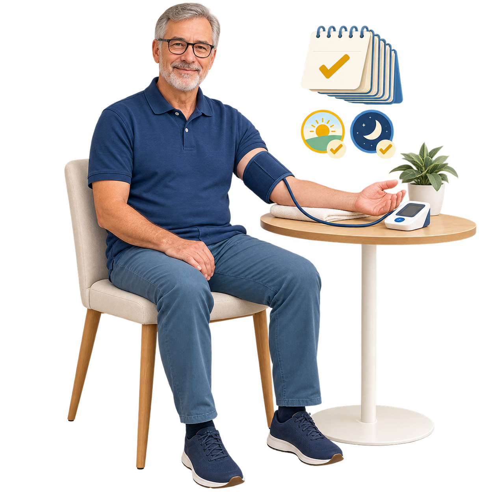

Dzienniczek ciśnienia
Zapisuj ciśnienie przez 7 dni.
Zapisuj ciśnienie przez 7 dni.
Średnią policzymy za Ciebie.
Zapisuj po dwa pomiary rano i wieczorem. Dzienniczek obliczy średnią z dni 2–7 oraz przygotuje uporządkowany zapis do rozmowy z lekarzem.

Jak wykonać serię pomiarów?
- 01Przygotuj sięPrzez 30 minut nie ćwicz, nie pal i nie pij napojów z kofeiną. Opróżnij pęcherz.
- 02Usiądź na 5 minutOprzyj plecy, postaw stopy płasko, nie krzyżuj nóg i nie rozmawiaj.
- 03Ułóż ramięZałóż dopasowany mankiet na nagie ramię i oprzyj je na wysokości serca.
- 04Zrób dwa odczytyPowtórz pomiar po co najmniej minucie. Zapisz oba wyniki, rano i wieczorem.
Dlaczego dzień 1 jest pomijany? NICE zaleca przy siedmiodniowym pomiarze domowym obliczanie średniej z dni 2–7. Dzienniczek zachowa pierwszy dzień, ale nie włączy go do średniej głównej.
Czy pomiar był porównywalny?
Metoda i bezpieczeństwo
Źródła
Zasady pomiaru i obliczania średniej pochodzą z aktualnych materiałów instytucjonalnych. Ostatnia kontrola: 6 września 2026 r.
Zapis wspiera rozmowę. Nie stawia diagnozy.
Dzienniczek ma charakter edukacyjny. Nie odstawiaj ani nie zmieniaj dawki leków na podstawie samych wyników bez uzgodnienia z lekarzem.